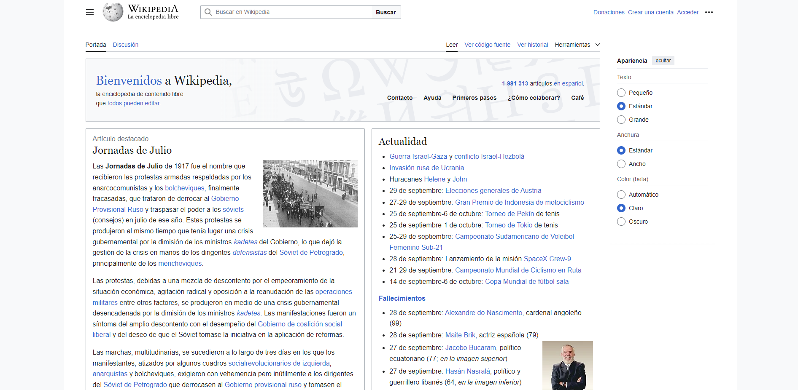

La usabilidad web hace referencia a la facilidad con la que los usuarios pueden interactuar y navegar por un sitio web. Se busca que las tareas sean fáciles de realizar y que el usuario no se pierda dentro del sitio, de esta manera se puede dar una mejor experiencia al usuario y al mismo tiempo se incrementan las posibilidades de que se vuelva acceder al sitio web. Jakob Nielsen, uno de los principales expertos en este campo, define la usabilidad como "un atributo de calidad relacionado con la facilidad de uso de las interfaces" (Nielsen, 2012). En términos más simples, un sitio web usable es aquel que permite a los usuarios encontrar lo que buscan, comprender su contenido y navegar sin problemas.
La importancia de la usabilidad web se basa en que un sitio fácil de usar mejora la experiencia a la hora de navegarlo como se mencionó anteriormente, pero además puede impactar de una manera positiva los objetivos comerciales que se plantearon a la hora de crear el recurso web. Un sitio web con alta usabilidad también suele tener mayor retención de usuarios (Usability.gov, s.f.). Es importante mencionar que si un sitio web está constituido en base a una usabilidad sencilla, usuarios de todo tipo podrán acceder al recurso sin problema, evitando frustraciones como en los casos en que las webs son complicadas.
El diseño debe ser intuitivo, eliminando elementos innecesarios que puedan confundir al usuario (Interaction Design Foundation, s.f.).
Los elementos de navegación y diseño deben ser coherentes en todo el sitio web (Nielsen, 2012).
Informar claramente al usuario sobre las acciones que realiza, como la confirmación de envíos de formularios o cambios en los botones al hacer clic (Usability.gov, s.f.).
Asegurarse de que el contenido esté disponible para personas con discapacidades, como la implementación de texto alternativo para imágenes (Interaction Design Foundation, s.f.).
Un buen ejemplo de usabilidad web es el sitio web de Google, que es conocido por su simplicidad y facilidad de uso. La barra de búsqueda está destacada y clara, lo que permite a los usuarios interactuar de inmediato con el contenido principal del sitio.
Microsoft mantiene el diseño consistente en sus productos y servicios lo que hace más facil la compresión de los usuarios.
Gmail ofrece retroalimentación instantánea a los usuarios. Por ejemplo, al enviar un correo electrónico, los usuarios reciben una notificación de que el mensaje ha sido enviado. También utiliza colores y animaciones para indicar acciones, como cuando un mensaje se está cargando.
Wikipedia se esfuerza por ser accesible para todos los usuarios, incluyendo aquellos con discapacidades. Ofrece texto alternativo para imágenes y un diseño que permite la navegación con teclado, lo que facilita su uso por personas con diversas capacidades.
Nielsen, J. (2012). Usabilidad 101: Introducción a la usabilidad. Nielsen Norman Group. Recuperado de https://www.nngroup.com/articles/usability-101-introduction-to-usability/
Interaction Design Foundation. (s.f.). ¿Qué es la usabilidad?. Recuperado de https://www.interaction-design.org/literature/topics/usability
Usability.gov. (s.f.). User Experience Basics. Recuperado de https://www.usability.gov/what-and-why/user-experience.html